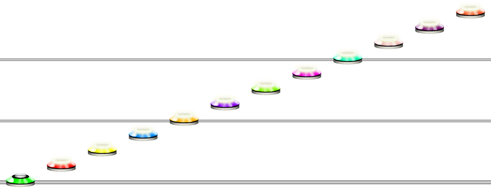
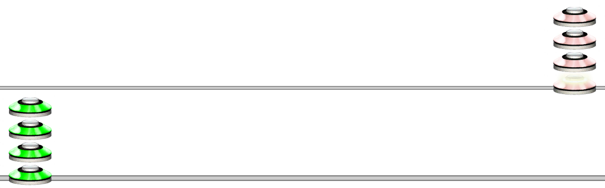
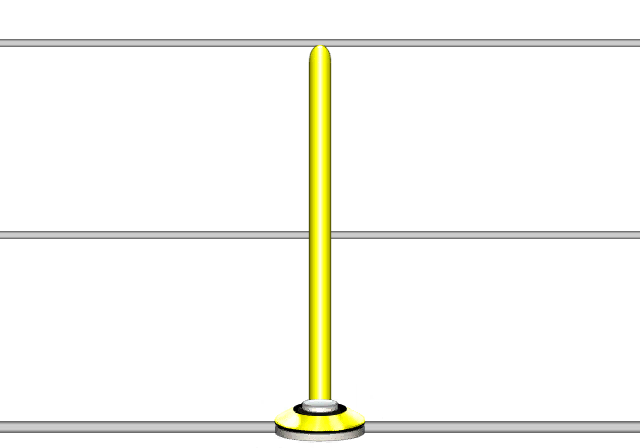

Note
Aliases
NOTE, NT, 🎵, ♩
Overview
The Note function is the base note creation function. Using numbers 0-9 or lowercase letters a-z, will yield the same result as using the Note function (without Length and Type parameters.)
Arguments
| Name | Type | Description |
|---|---|---|
| FretValue | integer | The fret value of this note. |
Fret Value
The fret will be defined as follows:
| Input | Value |
|---|---|
| any integer value | The value given |
ZGRYBOPLMT or 0 - 9 |
0 - 9 (0 is open note) |
a - z |
10 - 35 |
Examples
Example 1
NOTE(1)
A note of value 1, being a green note. Using "G" for the fret value also works in the Note function.
Example 2
NOTE(1)NOTE(10)
A note with value 1 followed by a note with value 10. a also works to define value 10.
Alternate Ways of Writing Notes
Writing a NOTE function for every note becomes cumbersome and tedious, therefore, Unilang will interpret numbers 0-9 and letters a-z as notes with values 0-35.
If you want notes above 35 for some reason, you can use the NOTE function, or surround any integer value with single quotes ' to achieve this.
Example 3
123456789abc
Using numbers and letters to write notes.
Example 4
1111'10''10''10''10'
Using quotes to write note values above 9.
Chords
You can use the CHORD function or wrap notes within square brackets [] to create chords.
See Chord for more information about chords.
Example 5
[345]3210
Will create a chord with the notes 3, 4, 5, followed by singular notes of 3, 2, 1 then an open note.

Note Properties
You can also use curly braces {} or the SET_NOTE_PROPERTIES function after any note to set the length and type of that note.
See Set Note Properties for more information about setting note properties.
Example 6
3{8}
Setting the length of a yellow note to 8 steps using curly braces.
